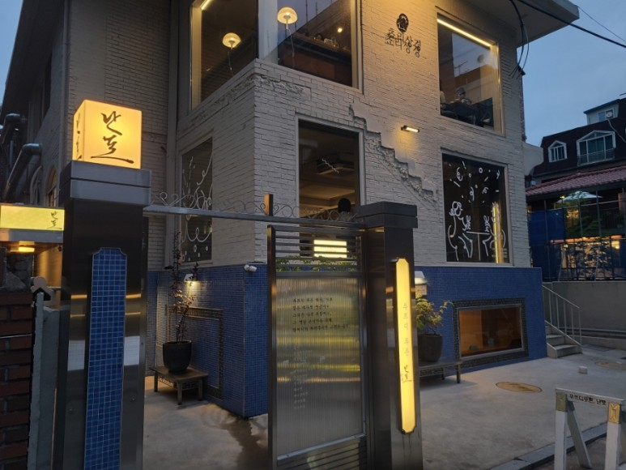
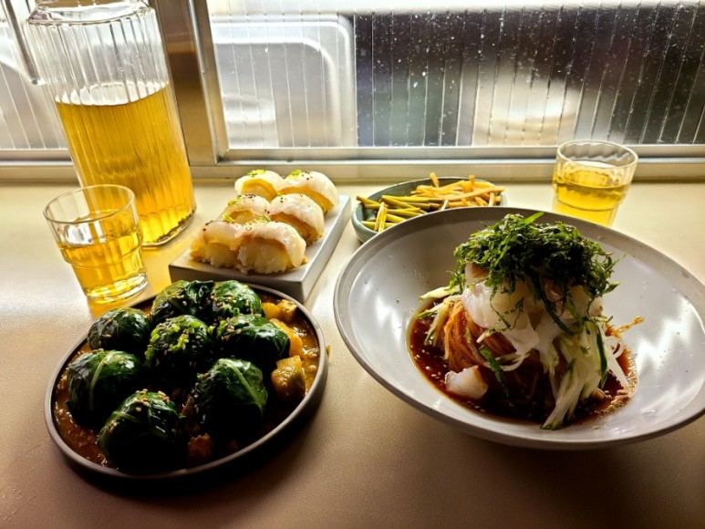

민성이의 맛집추천
수도권 맛집 목록(한식 위주)
(https://blog.naver.com/jju1213/222853521470)
 
서울숲 근처 성수동에 위치한 한식맛집이다. 영업시간은 오전 11시부터 오후 10시까지이다. 브레이크타임은 오후 3시부터 오후 5시까지이다. 웨이팅 라인이 긴 점이 단점. 제철회국수, 강된장쌈밥, 제철회묵은지말이가 대표적이다.